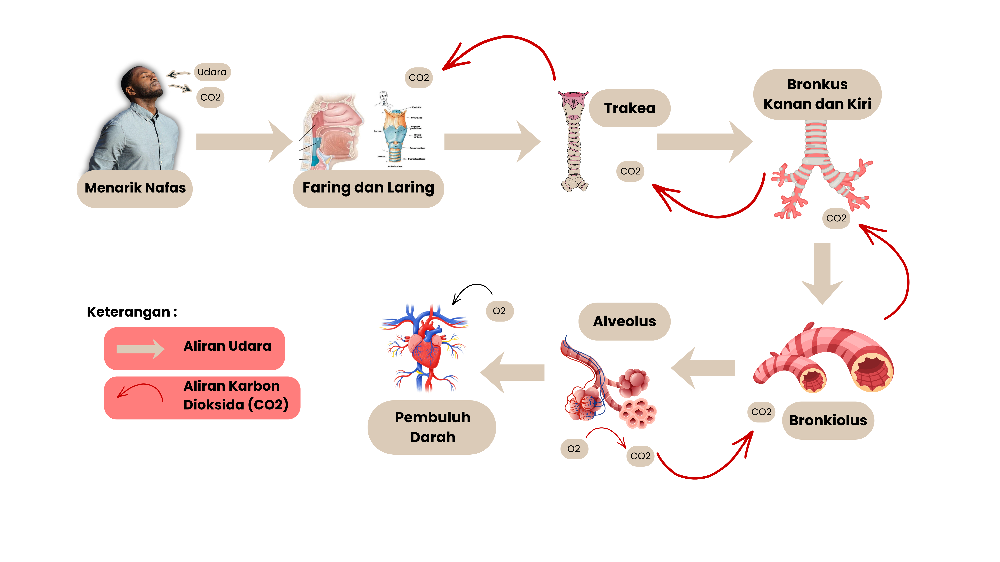

🫁 Lead Paragraph
Pengantar Sistem Pernapasan Manusia
🎯 Tujuan Pembelajaran
1. Peserta didik mampu menjelaskan struktur dan fungsi 9 organ penyusun sistem pernapasan manusia melalui diskusi kelompok dan kajian literatur yang relevan dengan kolaborasi dan komunikasi.
2. Peserta didik dapat menjelaskan 2 mekanisme proses pada sistem pernapasan manusia, serta kaitannya dengan sistem sirkulasi melalui kolaborasi dan komunikasi.
3. Setelah melakukan observasi di Puskesmas sebagai sumber informasi dan edukasi kesehatan, peserta didik menganalisis 5 gangguan pada sistem pernapasan dan faktor penyebabnya, serta hubungan antara kebiasaan hidup (merokok, polusi udara, olahraga) dengan kesehatan paru-paru secara tepat melalui kreativitas.
🔍 Pengertian Sistem Pernapasan
Apa kalian tahu apa itu sistem pernapasan?
Sistem pernapasan merupakan rangkaian organ yang berfungsi dalam proses pertukaran gas, yaitu menghirup oksigen dan mengeluarkan karbondioksida serta uap air. Oksigen menjadi kebutuhan utama dalam proses pernapasan karena berperan penting dalam menghasilkan energi. Oksigen diperoleh dari udara di sekitar lingkungan. Organ pernapasan bekerja dengan memasukkan udara yang mengandung oksigen dan mengeluarkan udara sisa yang mengandung karbondioksida serta uap air. Tujuan utama dari pernapasan adalah memperoleh energi, di mana pada proses bernapas terjadi pelepasan energi. Sistem pernapasan manusia meliputi saluran pernapasan, mekanisme pernapasan, dan gangguan yang dapat mempengaruhi sistem pernapasan.
🫁 Organ-Organ Pernapasan
- Hidung
Sebagai bagian terluar dari sistem pernapasan, hidung berfungsi sebagai pintu utama bagi udara yang masuk ke dalam tubuh, hidung terdiri atas dua tulang hidung (os nasal) serta beberapa tulang rawan (kartilago) yang tertutup oleh kulit. - Rongga hidung
Didalam hidung terdapat rongga hidung yang dilapisi oleh selaput lendir (mukosa) dan memiliki rambut halus. Rongga ini berfungsi sebagai penyaring, melembabkan, dan menghangatkan udara sebelum masuk ke seluruh saluran pernapasan lebih lanjut. Lendir berperan menahan partikel debu dan mikroorganisme, sementara jaringan epitel berlapis dan pembuluh darah membantu menyesuaikan suhu udara dengan kondisi tubuh. - Rongga mulut
Sebagai struktur awal saluran pencernaan, rongga mulut juga dapat berfungsi sebagai jalan masuk udara saat bernapas. Rongga ini secara struktural dibatasi oleh bibir, langit-langit (palatum) di atas, serta lidah dan jaringan otot di bagian bawah. - Faring
Faring (Tekak) merupakan struktur yang terletak di belakang rongga hidung serta rongga mulut dan tersusun dari otot lurik dengan panjang lebih 4 cm. Bagian ini memiliki peran sebagai persimpangan antara sistem pernapasan dan sistem pencernaan. - Laring
Laring atau pangkal tenggorokan memiliki katup epiglotis yang berperan sebagai pengatur aliran makanan dan udara pernapasan ke jalur masing-masing. Pada bagian ini terdapat pita suara yang berperan dalam menghasilkan suara. Namun, tubuh melalui pengaturan saraf memastikan bahwa aktivitas menelan, bernapas, dan berbicara tidak terjadi secara bersamaan demi menjaga kesehatan saluran pernapasan. - Trakea
Saluran tenggorokan yang berbentuk pipa dengan panjang kurang lebih 10 cm dan berada di leher hingga dada (torak). Struktur dindingnya tipis tetapi kuat dikarenakan disongkong oleh cincin tulang rawan. Permukaan bagian dalam tenggorokan dilapisi epitel bersilia yang berperan dalam menangkap serta menyaring benda asing yang masuk ke saluran pernapasan. - Bronkus
Di ujung trakea, saluran ini terbagi menjadi dua cabang yang disebut bronkus. Setiap bronkus mengarah ke paru-paru kanan dan kiri. Struktur bronkus hampir menyerupai trakea, akan tetapi ukurannya lebih kecil. Susunan tulang rawan pada bronkus juga tidak beraturan. - Bronkiolus
Setelah memasuki paru-paru, bronkus terus bercabang membentuk saluran yang lebih kecil lagi, namanya adalah bronkiolus. Di ujung setiap bronkiolus terdapat kantung-kantung udara kecil berdinding tipis yang disebut dengan alveolus atau alveoli. - Paru-paru
Sebagai organ pernapasan utama, paru-paru tersusun atas dua bagian yaitu paru-paru kanan (pulmo dexter) dengan tiga lobus dan paru-paru kiri (pulmo sinister) dengan dua lobus. Seluruh permukaan paru-paru diselubungi oleh pleura, yaitu selaput rangkap dua yang membentuk kantung tertutup berisi cairan limfa. Pleura berfungsi mengurangi gesekan ketika paru-paru mengembang dan mengempis. Dan proses pertukaran gas oksigen dan karbon berlangsung di alveolus yang terdapat di dalam paru-paru. - Diafragma
Diafragma merupakan otot kuat yang berfungsi untuk memisahkan rongga dada dari rongga perut. Gerakan diafragma ke arah bawah menciptakan ruang di dalam rongga dada untuk menarik udara dan memperbesar volume paru-paru.
Model 3D interaktif sistem pernapasan manusia. Putar dan zoom untuk eksplorasi lebih lanjut.
🔄 Mekanisme Pernapasan
Klik video untuk memutar/pause. Gunakan kontrol bawaan untuk volume, fullscreen, dll.
Mekanisme Pernapasan Dada
Proses Menarik Napas (Inspirasi)
Udara dari lingkungan pertama kali masuk melalui lubang hidung. Di dalam rongga hidung terdapat rambut hidung (vibrissae) dan lendir (mukus) yang berfungsi menyaring debu, kotoran, dan mikroorganisme agar tidak masuk ke saluran pernapasan. Lendir pada rongga hidung juga berfungsi dalam melembabkan udara, dan terdapat pembuluh darah kapiler yang membantu menghangatkan udara agar mendekati suhu tubuh.
Faring dan Laring
Dari rongga hidung, udara diarahkan ke faring, udara hanya
lewat, tidak mengalami pertukaran gas. Faring berfungsi sebagai jalur penghubung antara rongga
hidung dan laring. Dari faring, udara bergerak ke laring (pangkal tenggorok). Laring berfungsi
sebagai tempat pita suara. Saat bernapas, epiglotis dalam faring dan laring akan terbuka
sehingga udara dapat masuk ke laring. Epiglotis akan menutup saat menelan makanan agar makanan
tidak masuk ke saluran pernapasan. Udara akan masuk ke trakea.
Trakea
Udara dari laring akan masuk ke trakea, dinding trakea diperkuat oleh
cincin tulang rawan. Bagian dalam trakea dilapisi epitel bersilia dan sel penghasil lendir
(mukosa). Debu atau kotoran yang masih terbawa udara akan terperangkap oleh lendir, lalu
digerakkan ke atas oleh silia menuju faring untuk dikeluarkan atau ditelan. Saat melewati
trakea, udara tetap dipertahankan kehangatan dan kelembapannya, sehingga aman bagi saluran
pernapasan. Setelah melewati trakea, udara akan diteruskan ke bronkus kanan dan kiri yang menuju
masing-masing paru-paru.
Bronkus Kanan dan Kiri
Setelah udara melewati trakea, udara akan masuk ke
bronkus kanan dan bronkus kiri, masing-masing menuju paru-paru kanan dan kiri. Bronkus memiliki
dinding yang tersusun atas tulang rawan, otot polos, dan lapisan mukosa bersilia sehingga
salurannya tetap terbuka dan mampu menyaring partikel debu yang masih terbawa udara. Di dalam
bronkus, udara terus dialirkan lebih dalam ke paru-paru dan akan bercabang lagi menjadi
bronkiolus yang lebih kecil.
Bronkiolus
Bronkiolus merupakan percabangan kecil dari bronkus yang terdapat
di dalam paru-paru dan berfungsi menyalurkan udara ke bagian paru-paru yang lebih dalam. Dinding
bronkiolus tidak lagi mengandung tulang rawan, tetapi tersusun atas otot polos yang dapat
berkontraksi dan relaksasi untuk mengatur banyaknya udara yang masuk. Bronkiolus bercabang
menjadi saluran yang semakin kecil hingga berakhir pada alveolus. Melalui bronkiolus, udara
didistribusikan secara merata ke seluruh alveolus sehingga proses pertukaran gas dapat
berlangsung secara optimal.
Alveolus
Udara yang telah melewati bronkiolus akan masuk ke alveolus, yaitu
kantung udara kecil di paru-paru. Di dalam alveolus, kandungan oksigen (O₂) tinggi sedangkan di
kapiler darah sekitarnya kadar oksigen lebih rendah. Karena perbedaan konsentrasi ini, oksigen
berdifusi dari alveolus menembus dinding alveolus dan kapiler darah, lalu diikat oleh hemoglobin
dalam sel darah merah. Sebaliknya, karbon dioksida (CO₂) yang kadarnya lebih tinggi dalam darah
akan berdifusi dari kapiler ke alveolus. Gas CO₂ tersebut kemudian dikeluarkan dari tubuh saat
proses menghembuskan napas (ekspirasi).
Pembuluh Darah
Oksigen yang masuk ke kapiler alveolus akan diikat oleh
hemoglobin yang terdapat dalam sel darah merah dan membentuk oksihemoglobin (HbO₂). Ikatan ini
memungkinkan oksigen diangkut secara efisien oleh darah. Darah yang kaya oksigen kemudian
mengalir melalui vena pulmonalis menuju jantung (serambi kiri). Dari jantung, darah dipompa ke
seluruh tubuh melalui arteri. Saat darah mencapai jaringan tubuh, kadar oksigen di sel-sel lebih
rendah dibandingkan di darah, sehingga oksihemoglobin melepaskan oksigen. Oksigen kemudian
berdifusi ke sel-sel tubuh dan digunakan dalam proses respirasi sel untuk menghasilkan energi.
Dengan demikian, oksigen yang berasal dari alveolus akhirnya dimanfaatkan oleh sel-sel tubuh
untuk mendukung aktivitas dan kelangsungan hidup.
Membuang Napas (Ekspirasi)
Karbon dioksida yang dihasilkan oleh sel-sel tubuh dibawa oleh darah menuju paru-paru melalui vena pulmonalis dan kapiler darah di sekitar alveolus. Di kapiler alveolus, kadar CO₂ dalam darah lebih tinggi dibandingkan di alveolus, sehingga karbon dioksida berdifusi dari darah ke alveolus. Saat ekspirasi, otot diafragma dan otot antartulang rusuk mengendur, diafragma melengkung ke atas, dan tulang rusuk bergerak ke bawah serta ke dalam. Akibatnya, volume rongga dada mengecil dan tekanan udara dalam paru-paru meningkat. Udara yang mengandung karbon dioksida kemudian terdorong keluar dari alveolus melalui bronkiolus, bronkus, trakea, laring, faring, dan hidung, lalu dikeluarkan ke lingkungan. Dengan demikian, proses membuang napas berfungsi untuk mengeluarkan karbon dioksida.
⚠️ Gangguan Sistem Pernapasan
Paru-paru sehat
Paru-paru perokok
Paru-Paru terpapar penyakit Tuberkulosis (TBC)
Paru-Paru Sehat
- Warna merah mudah cerah menunjukkan bahwa jaringan paru-paru memiliki suplai oksigen yang baik dan berada di kondisi sehat.
- Permukaan bersih menggambarkan paru-paru yang tidak terkontaminasi oleh polutan, partikel berbahaya, serta zat asing seperti tar dan debu.
- Tekstur elastis dan kenyal karakteristik fisik yang memungkinkan paru-paru mengembang serta berkontraksi secara optimal.
- Fungsi pernapasan optimal kondisi tersebut memastikan pertukaran udara berlangsung lancar dan efesien.
Paru-Paru Perokok
- Paru-paru perokok tidak lagi berwarna merah mudah, melainkan dipenuhi bercak hitam hingga kecoklatan yang menutupi sebagian besar.
- Kondisi tersebut disebabkan oleh penumpukan tar dan endapan berbagai zat kimia beracun yang berasal dari asap rokok.
- Paparan zat kimia secara terus menerus sehingga memicu peradangan jangka panjang pada jaringan paru-paru. Seperti alveolus dapat menghancurkan struktur alveolus (kantong udara), yang merupakan lokasi vital bagi proses pertukaran oksigen dan karbon dioksida.
- Gejala awal timbul penyakit yaitu:
- Batuk kronis berdahak seperti batuk yang tidak berkunjung sembuh, terutama di pagi hari, sering disertai lendir (dahak) berwarna putih atau kekuningan.
- Nafas pendek merasa mudah terengah-engah saat sedang melakukan aktivitas fisik ringan, seperti naik tangga atau berjalan cepat.
- Kelelahan berlebihan, tubuh terasa cepat lelah meski tidak melakukan aktivitas berat karena kadar oksigen dalam darah mulai menurun.
- Proses timbulnya penyakit pada perokok adalah:
- Lumpuhnya silia. Asap rokok merusak silia sehingga mekanisme pembersihan paru-paru terganggu dan lendir menumpuk.
- Peradangan Saluran Napas (Bronkitis). Iritasi zat kimia menyebabkan peradangan saluran napas disertai produksi lendir berlebih secara terus-menerus.
- Kerusakan Alveolus. Kerusakan dinding alveolus oleh tar mengurangi elastisitas paru-paru dan menghambat pertukaran gas.
- Penyempitan Permanen (PPOK). Perpaduan bronkitis dan emfisema menimbulkan penyumbatan aliran udara yang bersifat permanen.
- Mutasi Sel (Kanker). Akumulasi zat karsinogenik dalam jangka panjang memicu mutasi sel dan pertumbuhan sel yang tidak terkendali.
Paru-Paru terpapar Penyakit Tuberculosis (TBC)
- Penyebab utama dipicu oleh infeksi bakteri yang bernama Mycobacterium tuberculosis.
- Jika sudah terpapar oleh bakteri tersebut paru-paru menunjukkan adanya bintil-bintil (tuberkel) serta jaringan lesi (luka) pada permukaan paru-paru.
- Aktivitas bakteri ini merusak jaringan paru-paru secara progresif, yang dapat membentuk rongga-rongga atau lubang serta mengubah struktur alami paru-paru.
- Cara penularan penyakit ini seperti melalui udara Bakteri menyebar saat penderita TBC aktif batuk, bersin, berbicara, atau bahkan bernyanyi. Tindakan ini melepaskan percikan ludah kecil yang disebut droplet nuclei. Inhalasi, dimana Orang sehat dapat tertular jika menghirup droplet yang melayang di udara tersebut. Bakteri kemudian masuk melalui saluran pernapasan menuju paru-paru.
- Gejala klinis pada penderita TBC seperti timbul batuk kronis dimana disertai darah, mengalami sesak napas akibat kurangnya fungsi paru-paru yang sehat, dan terdapat nyeri timbul yang tidak nyaman di area dada, terutama saat bernapas atau batuk.
- Bakteri TBC tumbuh secara lambat dengan waktu pembelahan sekitar 15–20 jam, jauh lebih lama dibandingkan bakteri pada umumnya. Akibatnya, masa inkubasi penyakit ini cukup panjang, yakni 2–10 minggu, bahkan bakteri dapat berada dalam fase laten selama bertahun-tahun tanpa gejala. TBC baru menjadi aktif dan menular ketika daya tahan tubuh melemah, sehingga bakteri berkembang pesat dan merusak jaringan. Sifat pertumbuhan yang lambat ini menyebabkan pengobatan harus dilakukan secara rutin selama 6–9 bulan agar bakteri benar-benar mati.
🩹 Pencegahan dan Penanggulangan
Pencegahan
PEROKOK
Terdapat beberapa pencegahan dari merokok yaitu:
- Menghindari kebiasaan merokok dimana langkah yang paling utama dalam menjaga kesehatan paru-paru.
- Mengurangi paparan asap rokok dimana hindari dari asap rokok karena asap rokok dapat mengandung zat kimia yang berbahaya.
- Akibatnya kerusakan alveolus dimana kandungan dalam rokok dapat merusak struktur kecil di paru-paru (alveolus).
- Sehingga mengakibatkan resiko penyakit yang sangat berat yaitu kanker paru-paru.
PENDERITA TUBERKULOSIS (TBC)
- Menerapkan cara batuk dan perilaku hidup bersih yang benar untuk mencegah penularan TBC.
- Menjaga kualitas udara di dalam rumah agar sirkulasi udara mengalir dengan baik.
- Memastikan rumah mendapatkan sinar matahari yang cukup agar lingkungan tetap kering, dimana bakteri TBC ini sulit berkembang biak di kondisi kering.
- Pemberian vaksin sejak usia dini sebagai perlindungan dasar yaitu pemberian vaksin BCG (Bacillus Calmette-Guérin) dimana vaksin ini mengandung bakteri Mycobacterium bovis yang telah dilemahkan untuk merangsang sistem kekebalan tubuh tanpa menyebabkan penyakit. Vaksin BCG sebaiknya diberikan sedini mungkin setelah bayi lahir atau sebelum bayi berusia 1 bulan, batas waktu paling lambat sebelum bayi berusia 3 bulan. Pada vaksin ini diberikan 1 kali seumur hidup.
Penanggulangan
PEROKOK
Penanggulangan dari merokok yaitu:
- Berhenti merokok dimana langkah ini sangat krusial dalam meningkatkan kerusakan lebih lanjut pada silia (rambut halus) dan jaringan alveolus.
- Olahraga rutin dimana aktivitas fisik secara teratur untuk membantu dalam meningkatkan oksigen dan memperkuat otot-otot pernapasan guna pemulihan fungsi paru-paru.
PENDERITA TUBERKULOSIS (TBC)
- Pengobatan OAT (Obat Anti-Tuberkulosis) dimana menjalani pengobatan secara disiplin dan konsisten.
- Durasi minimal 6 bulan dimana pengobatan harus diselesaikan selama minimal enak bulan tanpa terputus (sesuai dengan interaksi medias).
- Fungsi Obat Anti-Tuberkulosis (OAT) berfungsi untuk mengeradikasi bakteri Mycobacterium tuberculosis secara menyeluruh. Pengobatan terdiri atas fase intensif untuk membunuh bakteri aktif dan fase lanjutan untuk mengeliminasi bakteri laten guna mencegah kekambuhan. Kombinasi beberapa antibiotik dalam OAT juga bertujuan mencegah resistensi obat, sehingga kepatuhan pasien dalam menjalani terapi minimal enam bulan menjadi faktor penting dalam pemulihan paru-paru.
- Nutrisi tinggi protein dimana mengkonsumsi asupan kaya akan protein untuk mendukung dan mempercepat proses regenerasi jaringan paru-paru yang rusak akibat infeksi.
- Olahraga ringan seperti jalan santai di pagi hari (udara segar) atau peregangan ringan (stretching) dimana penderita TBC hindari olahraga berat.